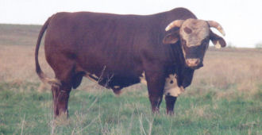

Texas Ranching Conservancy 
|
| TRAITS | HIGHLY DESIRABLE | UNACCEPTABLE |
|---|---|---|
| Scrotum | Large | Very small |
| Masculinity | Very masculine | Feminine or ox-like and rough |
| Disposition | Docile, but alert | Lethargic or wild |
| Testicles | Two testicles equally developed |
One testicle under developed |
| Body size | Small frame scores | Large frame scores |
| Body condition | Very fleshy & solid | Very thin or obese |
| Flank | Very deep | Very shallow |
| Rear muscle length | Very long | Very short |
| Rear muscle amount | Heavy | Very light or very heavy and bulging |
| Chest (when viewed from front) |
Very deep | Very shallow |
| Body length | Very long | Very short |
| Top line | Very strong & straight |
Arched, or very weak and sway backed |
| Body depth | Very deep | Very shallow |
| Body width | Very wide | Very narrow |
| Sheath and dewlap | Very clean | Very loose and pendulous |
| Prepuce | Tightly held, and free from looseness |
Loose and dangling |
| Rump | Moderately sloped between pens and hooks | Very flat or very angled between pens and hooks |
| Bone | Moderate or slightly heavy | Very heavy or very light |
| Shoulder set (when viewed from side) |
Moderately angled | Very straight |
| Rear leg set (viewed from side) |
Moderately angled | Very angled, or very straight and post legged |
| Pastern | Slightly sloped | Very sloped and flat, or very steep |
| Feet | Slightly large | Very large or very small |
| Pigmentation | Very heavy | Very slight to none |
|
Back to TRC's beef herd management tools
http://www.texasranchingconservancy.com/bullguide.html | |